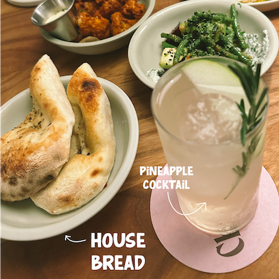
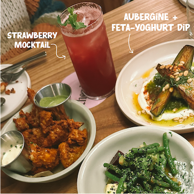

Op deze menu-pagina wil ik je graag persoonlijk meenemen naar de heerlijke gerechten die je bij Chez Nina kunt proeven, evenals de gerechten die ik zelf heb mogen ervaren tijdens mijn bezoek.


Waar Chez Nina echt in uitblinkt, zijn de gerechten. Tijdens mijn bezoek heb ik mogen genieten van hun shared dining concept, waarbij we diverse smaakvolle gerechten deelden. De smaken waren verfijnd en bijzonder, en de presentatie was een lust voor het oog.

De menukaart wisselt met de seizoenen, waardoor je telkens nieuwe smaakcombinaties en culinaire ontdekkingen kunt doen. De kaart is best ruim en er is veel keuze maar toch is het leuk dat de kaart telkens veranderd.